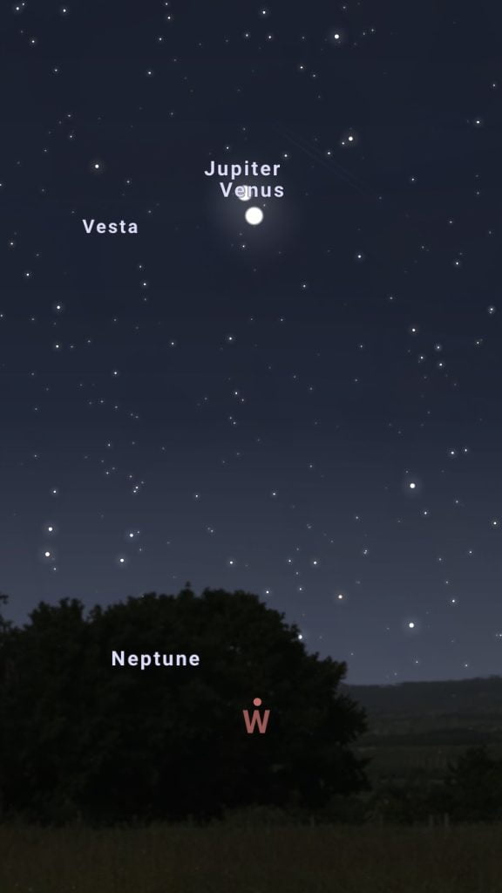
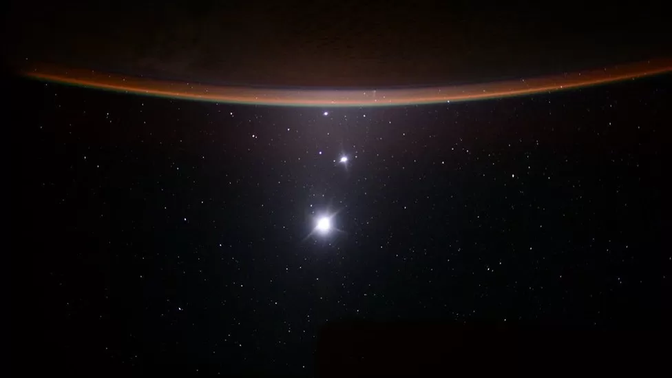
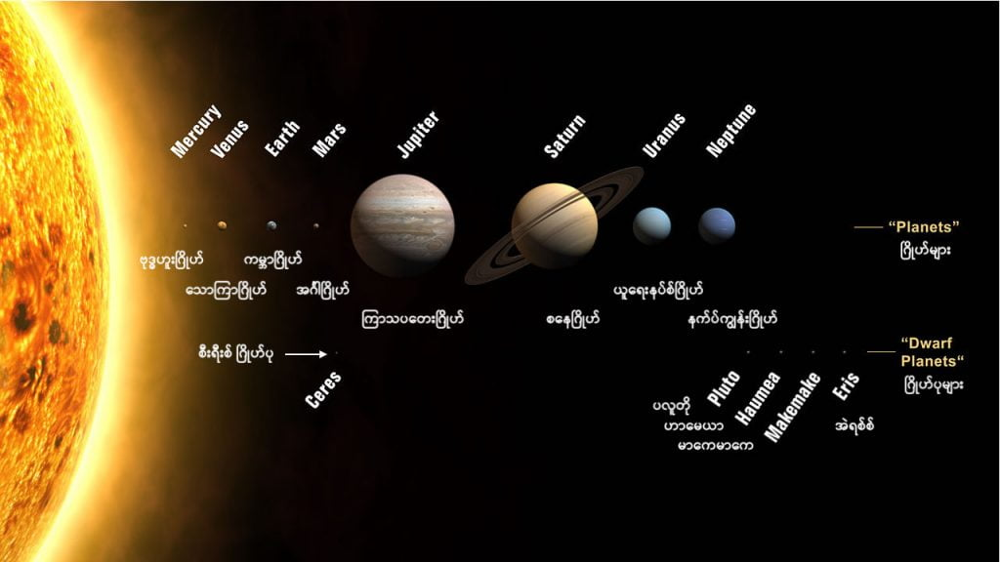

ဒီလို ဂြိုဟ်နှစ်စင်း ပူးကပ်သွားတဲ့ ဖြစ်စဉ်ကို conjunction လို့ ခေါ်ပါတယ်။ ဒီ ဖြစ်စဉ်မှာ ဂြိုဟ်တစ်စင်းဟာ လ (သို့) ကြယ် (သို့) အခြား ဂြိုဟ် တစ်စင်းနဲ့ ပူးကပ် နေသယောင် ကောင်းကင်မှာ မြင်ရတဲ့ သဘာဝ ဖြစ်ပါတယ်။
ဒီလို ပူးတယ် ဆိုရာမှာ အမြင်အရသာ ပူးခြင်း ဖြစ်ပါတယ်။ တကယ်က ကောင်းကင်က ဂြိုဟ်တွေ ကြယ်တွေ ဆိုတာ တစ်ခုနဲ့ တစ်ခု အဝေးကြီးပါ။ ဒါပေမယ့် ဂြိုဟ်တွေဟာ နေကို ပတ်နေ ကြတာမို့ ကောင်းကင်မှာ သူတို့ရဲ့ တည်နေရာ ကလဲ အမြဲ ပြောင်းနေပါတယ်။

ဒီတော့ တခါတလေ အဝေးမှာ ရှိတဲ့ ဂြိုဟ်တစ်စင်းဟာ နောက် ဂြိုဟ် တစ်စင်းနဲ့ ဖြစ်စေ၊ ကြယ်တစ်စင်းစင်းနဲ့ ဖြစ်စေ ကမ္ဘာက ကြည့်ရင် တခါတလေ တစ်တန်းထဲ ကျသွားတဲ့ အခါမျိုး ဖြစ်တတ်ပါတယ်။ ဒီလို အခါမျိုးမှာ ကျွန်တော်တို့က ဒီ ဂြိုဟ် နဲ့ အခြား ဂြိုဟ် (သို့) ကြယ်တို့ နီးကပ်ပြီး ပူးသွားတယ်လို့ မြင်ကြရတာ ဖြစ်ပါတယ်။
ဒီနေ့ည ဖြစ်ပေါ်မယ့် သောကြာဂြိုဟ် နဲ့ ကြာသပတေးဂြိုဟ် ပူးခြင်းကိုတော့ ထူးခြားတဲ့ ကြယ်တောက်မှု တစ်ခု အနေနဲ့ မြင်ကြရမှာ ဖြစ်ပါတယ်။ ကြာသပတေး ဂြိုဟ်ရော သောကြာဂြိုဟ်ရော နှစ်စင်းလုံးဟာ အလွန် တောက်ပတဲ့ ဂြိုဟ်များ ဖြစ်ကြပါတယ်။ ပြီးတော့ ဒီတစ်ခါ ဂြိုဟ်နှစ်စင်း ပူးတာဟာ တစ်ခုနဲ့ တစ်ခု ထိကပ်လု နီးပါးအထိ ပူးသွားမှာမို့ ဒီဂြိုဟ် နှစ်စင်းပေါင်းရဲ့ အလင်းရောင်ကို ကောင်းကင်မှာ တောက်ပစွာ တွေ့မြင် ကြရမှာ ဖြစ်ပါတယ်။
ကြာသပတေး ဂြိုဟ်နဲ့ သောကြာဂြိုဟ် နှစ်စင်းဟာ ပြီးခဲ့တဲ့ သီတင်းပတ် တွေအတွင်း ကတဲက တစ်ခုနဲ့ တစ်ခု တဖြည်းဖြည်း နီးကပ် လာနေခဲ့တာ ဖြစ်ပါတယ်။ ဒါပေမယ့် လက်တွေ့ မှာတော့ ဒီ ဂြိုဟ်နှစ်ခုဟာ အကွာအဝေး အားဖြင့် မိုင်ပေါင်း သန်း ၄၀၀ ခန့် ကွာခြားနေမှာ ဖြစ်ပါတယ်။

ဒီလို ဂြိုဟ်ပူးတဲ့ ဖြစ်စဉ်ကို နက္ခတ် ဝေဒ ပညာရှင် တွေကတော့ ထူးခြား ဖြစ်စဉ် တစ်ခု အနေနဲ့ ဟောကိန်းထုတ်ကောင်း ထုတ်နိုင်ပါ လိမ့်မယ်။ ဒါပေမယ့် ဒါဟာ နက္ခတ်သိပ္ပံ ပညာရပ် နယ်ပယ် အနေနဲ့ ဘာမှ ထူးခြားမှု မရှိပါဘူး လို့ နာဆာ ရဲ့ ထုတ်ပြန်ချက်မှာ ဖေါ်ပြ ထားပါတယ်။ “ကြည့်လို့ ကောင်းရုံမှ တပါး ထူးခြားချက် မရှိပါ” လို့ နာဆာက ထုတ်ပြန် ထားပါတယ်။
ကြည်လင်တဲ့ ကောင်းကင်မှာ ဒီ ဂြိုဟ်ပူးတဲ့ ဖြစ်စဉ်ကို နက္ခတ်ကြည့် မှန်ပြောင်းတွေ အကူအညီ မပါပဲ သာမန် မျက်စေ့နဲ့ မြင်တွေ့နိုင်မှာ ဖြစ်ပါတယ်။ ဒါပေမယ့် ရိုးရိုး မှန်ပြောင်းလေး တစ်လက်လောက် ရှိမယ် ဆိုရင်တော့ လှပတဲ့ ဂြိုဟ်ပူးခြင်း ဖြစ်စဉ်ကို သေခြာ တွေ့မြင်ရမှာ ဖြစ်ပါတယ်။

နောက်ပြီး ဒီ ဂြိုဟ်နှစ်စင်းဟာ နေဝင်ပြီးစ လောက်မှာပဲ မိုးကုပ်စက်ဝိုင်းပေါ်မှာ ရှိနေပြီး နာရီ အနည်းငယ် အတွင်း မိုးကုပ်စက်ဝိုင်းအောက် ဝင်ရောက် ပျောက်ကွယ် သွားမှာမို့ နေဝင်ပြီးစ မှောင်စပျိုးချိန်ကို ကြည့်ဖို့ လိုပါမယ်။
ကြည့်ရမယ့် အရပ်က အနောက်ဖက် မိုးကုပ် စက်ဝိုင်း အပေါ်နား နေရာ ဖြစ်ပါတယ် ခင်ဗျာ။ အားလုံး ကံကောင်း ကြပါစေ။